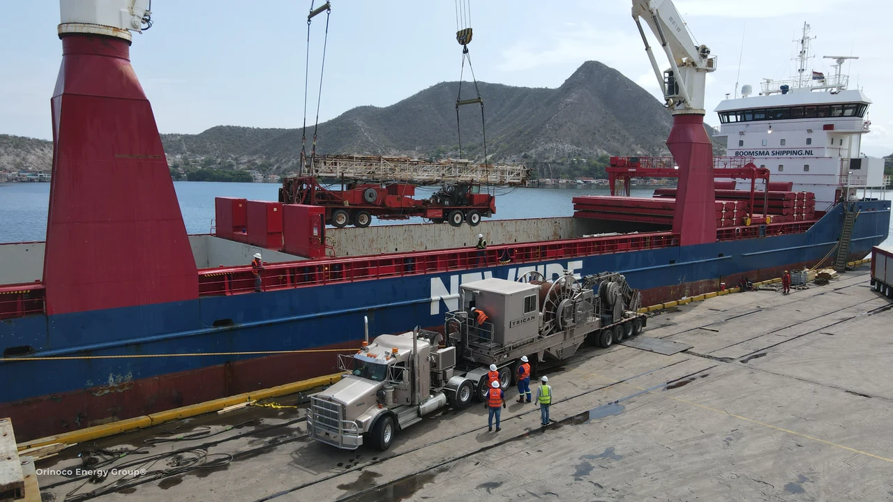
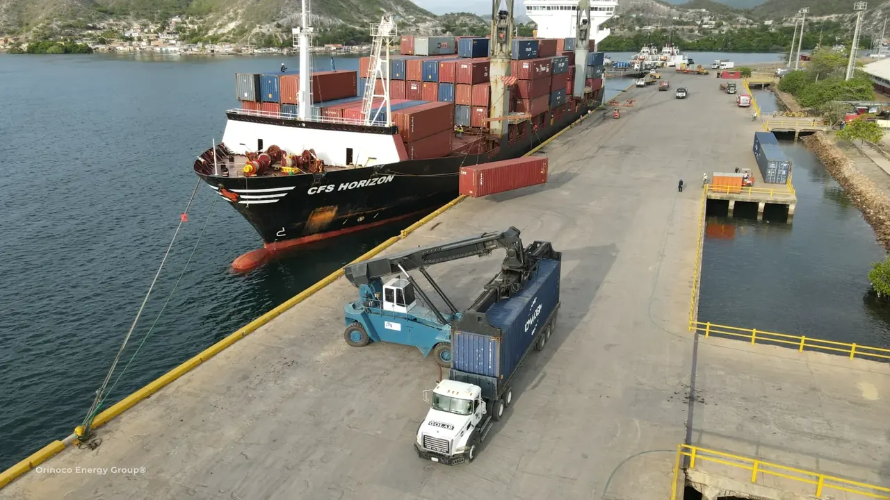

Compare against your requirement.
Review specifications, quantities, intended use and supplier documentation. Flag alternatives for your technical approval.
International procurement / supplier to site
Tell us the equipment or materials you need and the delivery destination. We connect supplier sourcing, purchase coordination and the journey to your receiving site.
From the requirement to the receiving site
Your destination helps shape the supplier search. We evaluate location, technical fit, availability and the total delivery scope, with Houston as a key sourcing connection and international alternatives considered around the requirement.
A competitive equipment price is one part of the decision. Packaging, collection, shipment, customs and final delivery also affect the cost and timing. OEG brings those stages into the comparison before you approve the purchase.

Make the purchase work at destination
The closest supplier may be an option. Technical suitability, lead time and the cost to the receiving site guide the recommendation together.
Review specifications, quantities, intended use and supplier documentation. Flag alternatives for your technical approval.
Compare supplier availability with packing, origin transport, international shipment and the destination services included in the scope.
Check cargo dimensions, handling needs, import documentation and site access early, then coordinate the agreed purchase and movement.
A clear purchase sequence
Choose supply coordination or a connected supply-and-delivery scope. Inspection, specialist packing, installation and technical services are included only when agreed.
Equipment or material, specification, quantity, destination and required date.
Request supplier offers and compare technical fit, availability and the agreed delivery scope.
You approve the selected offer, commercial terms and scope before the purchase proceeds.
Follow up the order and supplier readiness; arrange documentation, inspection or consolidation when contracted.
Coordinate collection and the contracted transport, customs, handling and final-site handover.

Energy & industrial supply
Share a part number, specification, drawing or equipment list where available. If an alternative is needed, it is presented for your review before purchase.
Send your equipment listStart with the destination
An equipment list, technical specification or existing supplier offer is a useful starting point. Share the destination even if you have not selected a supplier.
Continue with quantities, delivery timing and your preferred scope. Supplier selection is reviewed around your requirement and destination.
Orinoco Energy Group
Procurement in origin, energy expertise at the project and logistics connecting both.
The group brings OEG Internacional together with OCK, ADUAVEN, ECO GREEN and TUBINCA, connecting commercial coordination with port operations, customs, environmental services and asset integrity.
See how the group connectsYour next project
Tell us what you need, where it should arrive and when. We will review the sourcing and delivery options around your project.
Send your purchase requirement